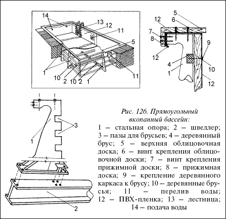
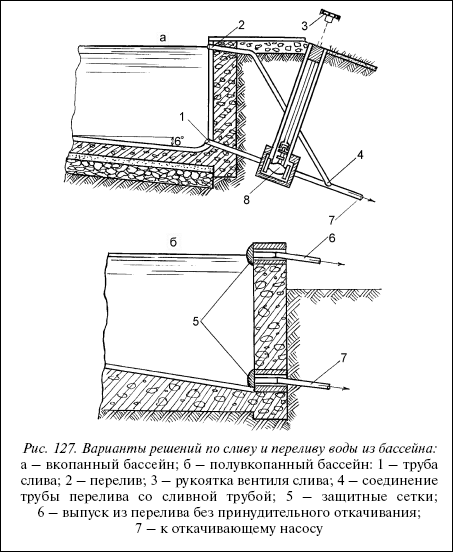
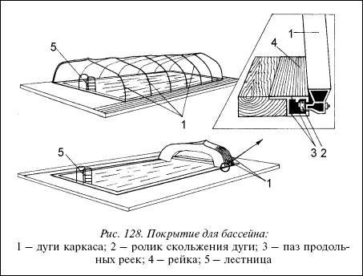
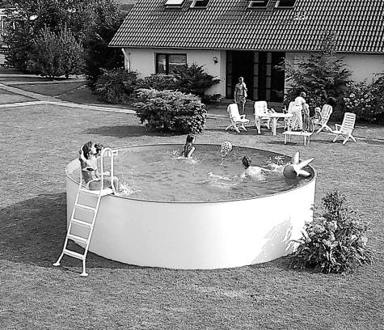
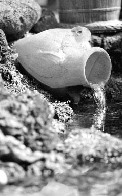
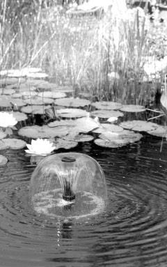
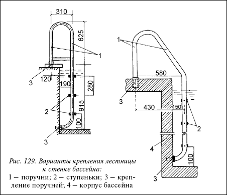

Прямоугольный вкопанный бассейн.

Теперь перейдем к строительству в копанных бассейнов. На рисунке 126изображен прямоугольный вкопанный бассейн. Глубина бассейна также будет зависеть от его назначения: детский (50 см), взрослый (105–150 см), бассейн для прыжков (320 см в самом глубоком месте).

Рис. 126. Прямоугольный вкопанный бассейн:
1 – стальная опора; 2 – швеллер; 3 – пазы для брусьев; 4 – деревянный брус; 5 – верхняя облицовочная доска; 6 – винт крепления облицовочной доски; 7 – винт крепления прижимной доски; 8 – прижимная доска; 9 – крепление деревянного каркаса к брусу; 10 – деревянные брусья; 11 – перелив воды; 12 – ПВХ-пленка; 13 – лестница; 14 – подача воды
Технология проведения работ остается той же, отличия заключаются в конструктивных решениях. В предлагаемом варианте наряду с деревянной основой чаши бассейна задействованы стальные конструкции – десять опор 1 и четыре швеллера (балки) 2 по дну бассейна, вмурованные в бетон.
Такая конструкция имеет высокую прочность и позволяет проектировать бассейны с объемом воды более чем 28 м . В пазы стальных опор 3 вставляются деревянные брусья, на которые потом прибиваются доски (щиты), которые формируют чашу бассейна. Дно у такого бассейна, как уже упоминалось, бетонное, стены деревянные, гидроизоляция – ПВХ-пленка.

Рис. 127. Варианты решений по сливу и переливу воды из бассейна:а – вкопанный бассейн; б – полувкопанный бассейн: 1 – труба слива; 2 – перелив; 3 – рукоятка вентиля слива; 4 – соединение трубы перелива со сливной трубой; 5 – защитные сетки; 6 – выпуск из перелива без принудительного откачивания; 7 – к откачивающему насосу
Устройство дренажа котлована бассейна происходит по тому же принципу, как было изложено ранее (рисунок 122).Тот же принцип подвода подающей, сливной и переливной труб.

Рис. 128. Покрытие для бассейна:
1 – дуги каркаса; 2 – ролик скольжения дуги; 3 – паз продольных реек; 4 – рейка; 5 – лестница
Новым будет то, что вкопанный бассейн предполагает обязательное наличие принудительной откачки воды из бассейна. Ведь даже перелив воды не может происходить самотеком. Подача воды (если она осуществляется из водопроводной сети) может быть за счет имеющегося давления в водопроводной системе. Все остальное уже потребует установки откачивающего насоса. Вкопанный бассейн предполагает также и наличие покрытия.



Почему при данной конструкции мы рекомендуем покрытие? Помимо того, что это уменьшит количество загрязнений воды в бассейне и позволит сэкономить затраты на подогрев воды, наличие покрытия (тента) продлевает вам купальный сезон (почти на 2 месяца). И, что особенно важно, тент предотвратит случаи падения в воду детей и домашних животных в то время, когда никого из взрослых в бассейне или поблизости нет.

Рис. 129. Варианты крепления лестницы к стенке бассейна:
1 – поручни; 2 – ступеньки; 3 – крепление поручней; 4 – корпус бассейна
Когда мы упомянули об экономии затрат на подогрев воды, то имели ввиду появившиеся сейчас в продаже солнцепоглощающие пленки. Они сосредотачивают солнечные лучи подобно линзе и интенсифицируют подогрев воды. Высоту покрытия (тента) рекомендуется делать 120130 см. Каркас дуги 1 покрытия на концах имеет ролики 2, которые входят в выемки 3 реек 4, расположенных вдоль бассейна по обе его стороны (рис. 128).Последняя дуга (каркас) на торце бассейна имеет жесткое крепление. При растянутом каркасе бассейн будет закрыт, при сдвиге всей конструкции к торцевой дуге – бассейн открыт.